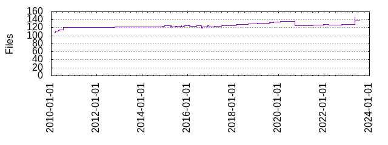

Files
- Total files
- 137
- Total lines
- 48983
- Average file size
- 12142.29 bytes

| Extension | Files (%) | Lines (%) | Lines/file |
|---|
| 15 (10.95%) | 1080 (2.20%) | 72 |
| bazel | 4 (2.92%) | 398 (0.81%) | 99 |
| c2 | 1 (0.73%) | 2211 (4.51%) | 2211 |
| cc | 56 (40.88%) | 32005 (65.34%) | 571 |
| darwin | 1 (0.73%) | 12 (0.02%) | 12 |
| diff | 1 (0.73%) | 567 (1.16%) | 567 |
| h | 25 (18.25%) | 5557 (11.34%) | 222 |
| hook | 1 (0.73%) | 104 (0.21%) | 104 |
| html | 2 (1.46%) | 482 (0.98%) | 241 |
| in | 2 (1.46%) | 37 (0.08%) | 18 |
| js | 1 (0.73%) | 28 (0.06%) | 28 |
| json | 2 (1.46%) | 31 (0.06%) | 15 |
| md | 2 (1.46%) | 6 (0.01%) | 3 |
| mini | 1 (0.73%) | 582 (1.19%) | 582 |
| pl | 1 (0.73%) | 116 (0.24%) | 116 |
| py | 7 (5.11%) | 1838 (3.75%) | 262 |
| r70 | 1 (0.73%) | 1475 (3.01%) | 1475 |
| sh | 3 (2.19%) | 80 (0.16%) | 26 |
| symbols | 1 (0.73%) | 16 (0.03%) | 16 |
| ts | 2 (1.46%) | 134 (0.27%) | 67 |
| txt | 2 (1.46%) | 726 (1.48%) | 363 |
| wreck | 1 (0.73%) | 1058 (2.16%) | 1058 |
| yml | 5 (3.65%) | 439 (0.90%) | 87 |